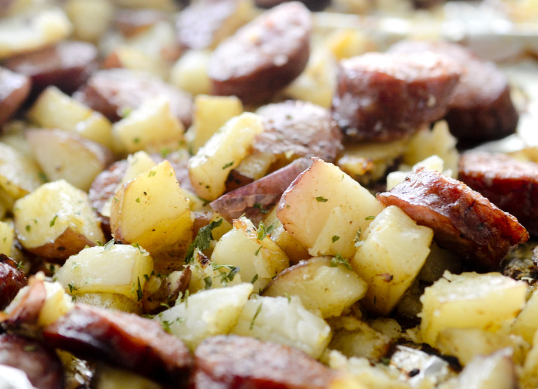

Sausage and Potatoes Bake

Description
This recipe is so good.
Really, it is so very good.
Ingredients
- Fully cooked Sasuage
- Whole Potatoes
- Various Seasonings
Steps
- Chop Potatoes into 1 inch cubes
- Place chopped Potatoes onto tinfoil sheet on baking sheet
- Cook for 15min at 400F
- After 15min, place sasuage on baking sheet. Ensure proper spacing. Cook for another 15min